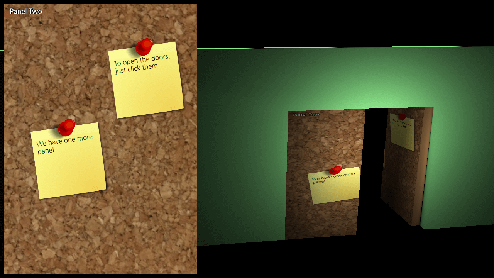

Qt Quick 3D - Dynamic Texture Example
Demonstrates how to use a 2D layer as a 3D texture.

DynamicTexture demonstrates how to render 3D objects with 2D item. The 2D item used in this example is a fancy corkboard and it is textured to a simple double door.
Drawing a 3D View
A wall and two doors
The two doors share the same texture, which is identified by the sourceItem property.
DefaultMaterial { id: material_001_material diffuseMap: Texture { sourceItem: object2d } } materials: [ material_001_material ]
Defining a new state
Each door will open when clicked on it and its state is set to opened.
states: State { name: "opened" PropertyChanges { target: door1 eulerRotation.y: 90 } } transitions: Transition { to: "opened" reversible: true SequentialAnimation { PropertyAnimation { property: "eulerRotation.y"; duration: 2000 } } }
Drawing a 2D layer
The corkboards example is used as the content for this example.
Rectangle { id: object2d width: 500 height: 700 anchors.top: parent.top anchors.left: parent.left anchors.margins: 10 CorkBoards { } layer.enabled: true }
Files:
- dynamictexture/CorkBoards.qml
- dynamictexture/Doors.qml
- dynamictexture/content/Panel.qml
- dynamictexture/dynamictexture.pro
- dynamictexture/main.cpp
- dynamictexture/main.qml
- dynamictexture/qml.qrc
Images:
{kind=link}
{kind=link}
{kind=link}